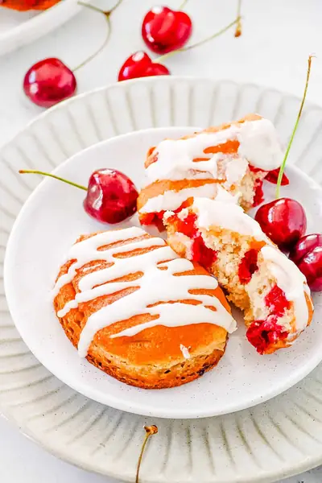

Cherry Fritters

Ingredients
- ¾ cup milk
- 2 tsp vanilla extract
- 1 egg
- 2 tbsp melted butter
- 1¾ cup all-purpose flour
- ½ cup sugar
- 1½ tsp baking powder
- ½ tsp cinnamon
- ⅛ tsp salt
- 6 oz cherries
- 2 cup oil (for frying)
- 1 cup powdered sugar
- 1 tbsp cream
- ½ tsp vanilla extract
- ½ tbsp water
Steps
- Roughly dice the washed and pitted cherries, set aside in a bowl for later.
- Place the milk, vanilla, egg, butter, flour, sugar, baking powder, cinnamon and salt into a high speed blender or food processor.
- Blend until a smooth batter has formed. Scrape down the sides several times to ensure all of the batter ingredients have combined.
- Transfer the batter to a bowl and stir through the diced cherries.
- Heat the oil in a large pot over a medium heat. (Test the temperature of the oil by dropping a small amount of batter into the oil, if it starts to bubble immediately then it is ready).
- Using a metal spoon, drop tablespoon amounts of batter into the oil. Add as many as you can fit without overcrowding the pot.
- Allow the fritters to cook for 1-2 minutes or until lightly golden brown, gently turn and continue to cook until golden.
- Remove and drain on kitchen paper towel.
- Repeat with remaining batter. Batter makes approx 12-14 fritters.
- Allow to cool completely.
- Prepare the glaze by mixing the powdered sugar, cream and vanilla together in a small bowl until smooth. Adjust the thickness by adding some water if needed.
- Drizzle the glaze over the fritters and allow the glaze to set before serving and enjoying.
Recipe by Anjali Shah · The Picky Eater, from The Picky Eater. Saved here for personal use; the original has the full notes, tips and photos. Open original